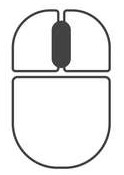

Bienvenido al procedimiento interactivo de "Trabajos en espacios confinados"
Utilice los controles del mouse para interactuar con el escenario.
- Para rotar y desplazarse por las vistas del laboratorio utilice el botón izquierdo del mouse.
-

- Para acercar o alejar las vistas del laboratorio utilice la rueda del mouse.
- 